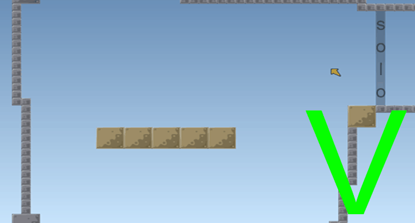
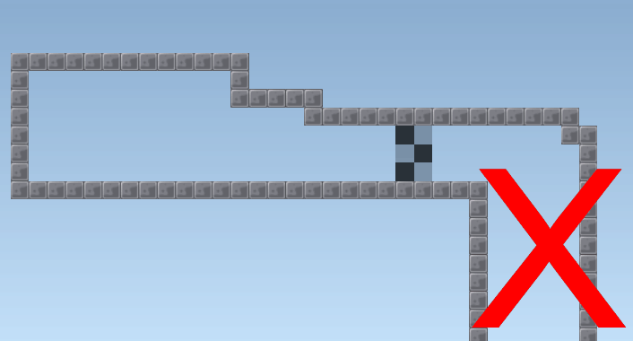
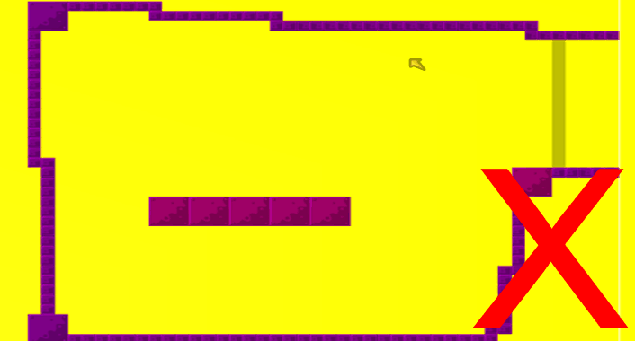
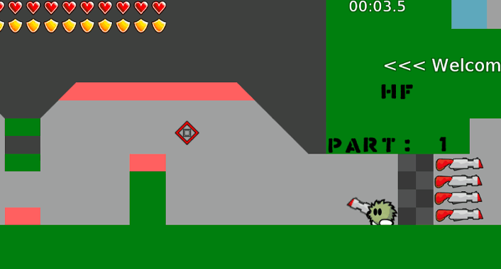
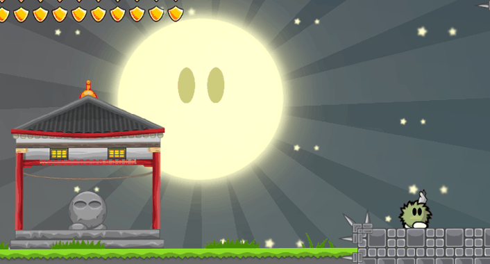

Hello there ! My name is Thomas and in Teeworlds I am called '=CuBe='. In this article I will discuss some things that can improve your DDRace maps. I do not claim that this is the one and only way, so it could be that you don't agree on all the things I write here. I will only show you my view on DDRace. If you are reading this, you should have already learned the basics of making maps. We will see some general tips, together with some examples.
What is the first thing a player sees when he plays a map? Of course, it's the start! Make sure that the start is always big enough and that there is room for everyone. If a server that is really active changes to your map, you don't want players to be frustrated because everyone is blocking each other at the start. Even if your map is made for 2 players, you should always make your start big enough!
A common mistake is that people make it so you can skip the startline and get weapons and then rerun the map. Be aware of this if your map uses weapons!
Another mistake is that mappers do not place more than one spawnpoint. This can cause players not spawning because tees are blocking the spawnpoint.Another tip is that you just make sure you have enough space. More space means more freedom to move, and everyone likes to move a lot. How many times have you jumped around while waiting for somebody ? If you map just make sure you have a bit of extra space in your parts. There are many players who play in a team of 4 or more players. In this case some players have to wait sometimes so the other tees can do a part. DDRace is very popular now, even the 64-player servers are getting filled up quite often. This means your map should be able to handle them, even if they don't go in team! A lot of my old maps would now be an example of how not to do it. For instance , if you would look at hardcore2. This map has a very bad start, where all tees block each other. Also, there just isn't enough space in all the parts. Nowadays, everyone has to wait or they simply can't continue. I would suggest that you use a solo part as your noobfilter. This is not needed but it is getting pretty standard. In this case there is much less blocking at the start.
My personal slogan when I map is: "Less is more". I can not stress enough how important this is. Sure, you can be very creative with some of the features DDRace gives you. But once you start using too much of them, your map becomes pretty complex and less enjoyable for most players. Don't get me wrong, some people really do a good job on using this features. I only stress this because the majority doesn't know how to use this properly. I would really suggest that you are very careful when you start using this. If you do decide that you really want to use features, don't use too many at one time. I'm not saying features are a bad thing, they are perfectly fine and give DDRace another dimension. For instance, take the jetpack feature that was recently added. It's a pretty fun thing, and it's also quite enjoyable to use. Who doesn't love to just fly through a part and just relax and experiment with his jetpack. I sure do! The reason why it's enjoyable is because in that part, it's the only thing you have to do. All you have to focus on is fly with your jetpack, using that one feature. However, if you would combine the jetpack with laser doors and hook teleporters, it would be a frustrating and complex experience. Also, if you don't use that many features, it's much easier for newer players to understand and have fun.
Another thing is that you should always avoid shortcuts! Unless the shortcuts are intended, you should really look closefully if people can cheat your map by taking a shortcut. The only case where this really happens is when you build a map with an open feeling. If you do, make sure everything is closed and there is no way people can cheat. A great example of this is, again, the map hardcore2. In the beginning of ddrace, the only way people knew how to hammerfly was up. There was no other way , and moving in a certain direction was not an option. Then people got much more skilled and then they could hammerfly around the map, basicly skipping the whole map.
Working with teleports can cause many unexpected problems. Be sure to always check if the teleports work properly. Also, make sure that the player can not fall back into a previous part when he gets ported back!
Colour schemes are also pretty important. You don't want to keep playing a map with really flashy colors that hurt your eye. This tip is pretty basic, but still many people fail to do this.
You don't have to be the best graphic designer and animator to make a good DDRace map! Even some of the best looking maps are never played, because they just don't have good gameplay. In DDRace, I believe that gameplay is everything. If your gameplay isn't good, having a great design will not help your map. If you made a part and it just doesn't play right, delete the part and start over with something else. Don't just keep them because it makes your map longer. You can see design as a bonus. I don't know if you know the map run_guy_25, but it's pretty well known and still played almost every day by a lot of players. The map doesn't have a great design, but it's simple and it has good gameplay for every player (Less is more!).
When your map has a bad structure, it can often cause players to get annoyed and stop playing your map. If the first parts are all very hard, followed by a lot of easy parts, your map has a bad structure. The most ideal structure (in my opinion) is when you gradually build up the difficulty level. This way, newer tees can still have fun and play your first parts, untill it gets too hard for them. You can choose this yourself. Sometimes it's also very nice to have a relaxing ending, and have the most difficult parts near the middle of the map. Both options are fine, as long as you don't start with all the hard parts!
Another fail that often happens with less experienced mappers is that they put the game layer under the freeze layer ( the shadows ). This causes the tee to be in front of the shadow wich looks very weird. Sometimes they even put the game layer under the grass- and other tilesets.
Mapping with the automapper can be really great. However, sometimes the automapper can do things you don't want to. Always check if everything you have made still remains the same after you use the automapper.
Don't use the same layer for things that have a different functionality. Split them up into different layers! Even though you could use the same tileset and the tiles look the same in some occasions. Never use the same layer! This will prevent a lot of things that can go wrong.
Another thing a lot of mappers do, is letting one person go in freeze. The other one has to hook him the whole time to finish the part. After this is done, the one who was first frozen, does the same to the other one. And this goes on and on... In my opinion, this is a fail. It's ok to do this from time to time, but the players want to be able to move, and not have to wait constantly in freeze. This brings us to the point: put variation in your map. Make sure people don't have to do the same the whole time. If the map feels repetitive, people will get bored faster and will not play your map again. Make sure you have parts where everyone has to complete them! It isn't needed that one tee is always frozen.
Having a certain style. All well-known mappers (Delo, Kintaro, Silex, Hitomi...) have their own style. This shouldn't be forgotten. If you are mapping a series or random maps, you should always map something that you would like to play too. Why would you map something that you wouldn't like to play yourself? The risk is much bigger that you map something that isn't fun to play at all. I'm pretty sure every good mapper likes to play his own maps. You can tell what kind of player a mapper is by just looking at the maps he makes.
If you want to make your own series, all maps need to have the same mapname, followed by a number that identifies the map. That way the player will recognize your series in the serverlist! If you make a series, be sure to maintain a certain style. If you don't do this, there is no point in making a series! A good example of this is the Adrenaline series of Silex. You just have to look at one of those maps and you know immediatly that it's a part of his series.
Test test test! I didn't do this myself at first, but testing really is the key to success. Whenever you map a part, test it to see how it plays. This way you can always tweak it a little bit so it becomes better and better. This is a simple tip, but I feel like some people don't do this enough!
So, I have discussed some of the basic stuff here. I will give you a little summary of what I've written down:
I hope you enjoyed reading this and that you make some high quality maps for us all to enjoy!